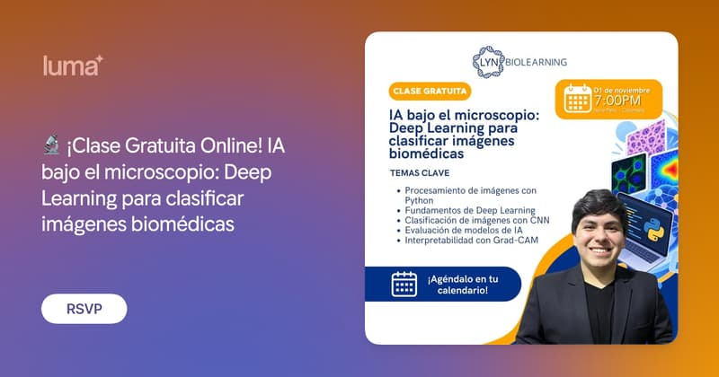

卷報 · 免費 AI 課程
二零二六 · 十一月一日 · 星期日
篩選準則：優先收錄今日舉行嘅線上免費 AI 研討會／工作坊；並補上今日仍可報名、隨時開讀嘅常設免費課。連結以官方為準。
今日收錄 1 場華語焦點（深智）＋約 7 場國際線上免費專場（日本、Meetup、印度、拉美、北美教師場）。部分北美／拉美場喺香港時間已入深夜或翌日清晨。已剔除實體課、報名已截止（如 GENESIS AI UNLOCKED sales ended）、以及註冊頁已唔再顯示 11/1 檔期嘅日本 ChatGPT 完全解説（只餘 11/2 起）。常設免費自學課見下方。
今日焦點 · 華語線上講座
《ChatGPT 對話 × Work × Codex：從生成式 AI 到 AI Agent 工作術》
把需求說清楚、把工作定義完整，並判斷與確認 AI 交付的成果；涵蓋「您的 dot」個人助理、Image 2.5、決策模型與 Agent、Codex 開發智慧郵件 App、Codex 串報告／Excel／簡報。報名連結見官方 Google Form。
立即報名 →今日舉行 · 線上免費
Build AI Agents for Beginners - A REAL Hands-on Workshop
初學友好：用免費工具（Groq、Gemini 等）親手建 Research Assistant Agent；約 90–120 分。亦可經 Google Form 報名。
Meetup 報名 →From Chatbot to Decision Engine: Build Agentic AI Live
現場用 Gemini 建 agent：SQL 查機場數據、從政策文件做 retrieval、帶引用回答；會分享 notebook。
Meetup 報名 →AI Engineer Free Webinar: AI Agents & RAG (360DT)
兩位講師現場由空白檔建 AI agent；涵蓋 agents、RAG、Claude／Azure AI。報名免信用卡。
報名／詳情 →Build Your First AI-Powered Data Analytics Project in 60 Minutes
美運工程師 Rajit Gupta 帶領：Pandas／Plotly／Streamlit＋ChatGPT，60 分鐘做出 AI 數據儀表板。
Luma 報名 →
¡Clase Gratuita Online! IA bajo el microscopio: Deep Learning para clasificar imágenes biomédicas
CNN／TensorFlow／Keras 分類生物醫學顯微影像（瘧疾細胞示例）；Google Colab。適合有少許生物背景、唔一定要深 Python。
Luma 報名 →Introduction to Artificial Intelligence (Edutech ND)
教育工作者向：AI 定義／類型、素養、數據收集、倫理同 AIClub 資源。名額上限 10。
報名／詳情 →常設免費課 · 今日可開讀
以下為長期開放、可即刻自學嘅免費線上課程／教材；唔係今日專場，但適合錯過直播後補學。
Hugging Face LLM Course
十二章實作：Transformers、Datasets、Tokenizer、微調同推理。官方寫明完全免費、無廣告。適合想親手煉 LLM／NLP 嘅工程師。
開讀 →Hugging Face AI Agents Course
由 Agent 基礎到 smolagents、LlamaIndex、LangGraph；含 agentic RAG 同結業專案。想跟當下「代理式 AI」潮流可由此入門。
開讀 →Practical Deep Learning for Coders
經典免費深度學習課：電腦視覺、NLP、表格數據、部署；用 PyTorch／fastai。需一定 coding 經驗（建議 Python），可用免費雲端 GPU。
開讀 →Generative AI for Beginners（21 課）
開源課綱：提示工程到 RAG 同 Agents；Python／TypeScript 範例。可讀教材即學；跑程式可用 Azure／Foundry Local 等（部分 API 或需費用）。
開讀 →Generative AI for Everyone
非技術向：生成式 AI 能做／不能做咩、提示工程同業務影響。影片免費；實驗室／證書或需 PRO。適合想建立共同語言嘅產品同管理層。
開讀 →Machine Learning Crash Course
Google 經典 ML 速成：概念、TensorFlow 練習同真實案例。搭配 Introduction to Generative AI 等「No charge」路徑，適合由 ML 基礎補起。
開讀 →Claude Academy / Anthropic Learn
官方學習中心：Claude 使用、AI Fluency、Claude Code、API／MCP 等。適合想系統學習用 Claude 同相關工具嘅人。
開讀 →